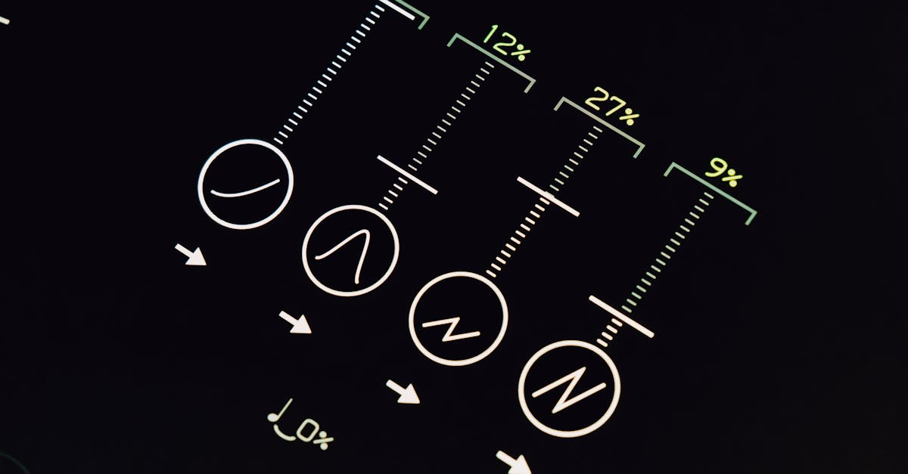
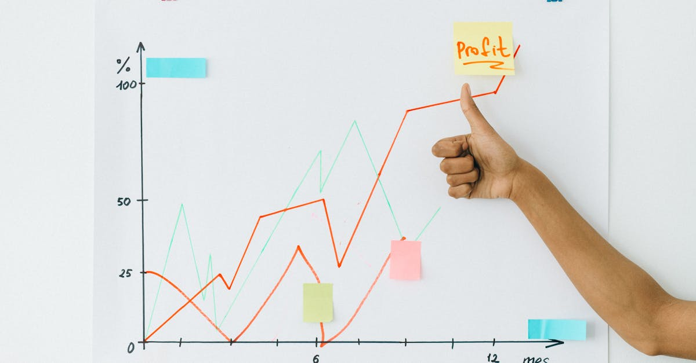

Le Vent Tourne sur les Marchés : Une Prudence Qui Interpelle
Les marchés financiers, souvent perçus comme un baromètre de la santé économique mondiale, semblent connaître une période de remise en question. Récemment, l'écho des déclarations de Savita Subramanian, figure influente à la tête de la stratégie actions et quantitative chez BofA Securities, a traversé l'Atlantique, invitant à une réflexion profonde. Selon Bloomberg Technology, Mme Subramanian exprime une certaine circonspection quant à la probabilité de « surprises positives » dans les secteurs phares de l'économie américaine, notamment la technologie et l'industrie. Cette analyse ne doit pas être prise à la légère ; elle suggère que l'euphorie passée pourrait céder la place à une phase de réalisme, voire de prudence accrue. Pour l'épargnant avisé, et plus encore pour celui qui mise sur l'investissement automatisé, cette perspective est cruciale. Elle souligne la nécessité d'une vigilance constante et d'outils capables de naviguer dans des eaux potentiellement plus agitées. L'époque où l'on pouvait s'attendre à des croissances exponentielles dans des secteurs déjà très valorisés semble s'estomper, nous poussant à reconsidérer nos stratégies d'investissement.
👉 À lire : IA : Le boom du cuivre, une course folle pour l'Amérique
Mais qu'est-ce qui motive une telle prudence de la part d'une experte de ce calibre ? S'agit-il d'une simple correction de marché ou d'un signal plus profond sur la structure même de la croissance économique actuelle ? La question est pertinente, d'autant plus que les investisseurs ont été habitués à une décennie de performances robustes, en particulier dans le secteur technologique. L'idée que les « poids lourds » du marché pourraient ne plus être les moteurs principaux des bonnes nouvelles boursières est un changement de paradigme. Cela implique que la simple diversification sectorielle pourrait ne plus suffire à elle seule pour garantir des rendements optimaux. Dans ce contexte, l'intégration de l'intelligence artificielle dans la gestion de l'épargne et des placements n'est plus un luxe, mais une nécessité. Elle offre une capacité d'analyse et d'adaptation que les méthodes traditionnelles peinent à égaler face à la complexité croissante des signaux du marché.
👉 À lire : Madison Air : IPO record, leçons pour l'épargne intelligente IA

Décrypter la Prudence de BofA : Pourquoi les Surprises Positives se Raréifient
L'analyse de Savita Subramanian, bien que concise, ouvre la porte à une multitude d'interprétations sur les forces sous-jacentes du marché. Lorsque l'on parle de « surprises positives » qui se raréfient, cela peut signifier plusieurs choses. Premièrement, il est possible que les attentes aient déjà été intégrées dans les cours des actions. Les valorisations actuelles des géants technologiques et industriels sont élevées, reflétant des perspectives de croissance optimistes. Si ces attentes ne sont pas dépassées – voire même simplement atteintes – le potentiel de hausse supplémentaire est limité.
« Les marchés ont une mémoire courte, mais une capacité d'intégration des nouvelles informations fulgurante. Ce qui était une 'surprise' hier est le 'consensus' d'aujourd'hui, » analyse fictivement le Dr. Émile Dubois, économiste spécialisé dans les marchés quantitatifs.
Deuxièmement, des facteurs macroéconomiques plus larges pourraient jouer un rôle. L'inflation persistante, la hausse des taux d'intérêt, les tensions géopolitiques et les incertitudes autour de la chaîne d'approvisionnement mondiale sont autant d'éléments qui peuvent freiner la croissance des entreprises, même les plus solides. Ces éléments créent un environnement où la performance exceptionnelle devient plus difficile à atteindre. Les marges de manœuvre se réduisent, et les annonces de résultats, même bonnes, peuvent être perçues comme moins impressionnantes si elles sont mises en perspective avec un contexte économique global plus difficile. Pour les secteurs de la technologie et de l'industrie, souvent sensibles aux cycles économiques et aux dépenses d'investissement, cette prudence est d'autant plus pertinente. La capacité d'une entreprise à innover ou à produire efficacement peut être entravée par des coûts accrus ou une demande fluctuante, rendant les « coups d'éclat » moins fréquents. Comment, alors, un investisseur individuel peut-il anticiper ces nuances et ajuster son portefeuille en conséquence ? La réponse réside souvent dans la capacité à traiter et à interpréter une quantité massive de données, une tâche qui dépasse souvent les capacités humaines.
L'Ère de l'Incertitude : Comment les Investisseurs S'adaptent
Face à un paysage où les certitudes s'estompent et où les surprises positives deviennent un luxe, l'investisseur moderne se trouve à un carrefour. Les méthodes d'analyse traditionnelles, basées sur des modèles historiques ou des intuitions humaines, montrent leurs limites. Comment distinguer un simple bruit de marché d'un signal précurseur d'un changement de tendance majeur ? C'est là que l'ère de l'incertitude exige une adaptation radicale. Les décisions d'investissement ne peuvent plus se contenter d'une approche statique, mais doivent embrasser une dynamique d'« investissement adaptatif », capable de réagir en temps réel aux flux d'informations et aux évolutions du sentiment de marché.
La complexité des interconnexions entre les marchés, les économies et les événements géopolitiques est telle qu'aucun individu, même le plus expérimenté, ne peut prétendre tout maîtriser. La psychologie humaine, avec ses biais cognitifs et ses émotions, est également un facteur de risque non négligeable. La peur de rater une opportunité (FOMO) ou la panique lors d'une correction peuvent entraîner des décisions irrationnelles, éloignant l'investisseur de ses objectifs à long terme. C'est précisément dans ce contexte que l'on commence à percevoir la valeur inestimable des technologies avancées. La capacité à digérer des téraoctets de données financières, économiques, sociales et même textuelles en une fraction de seconde, pour en extraire des schémas et des corrélations invisibles à l'œil nu, devient un avantage concurrentiel décisif. L'adaptation ne signifie plus seulement suivre les tendances, mais les anticiper, voire les déconstruire, pour identifier les vraies opportunités et les risques cachés. C'est une quête de résilience et de performance dans un monde où la seule constante est le changement.

L'IA en Bouclier et en Phare : Naviguer les Turbulences du Marché
Dans ce contexte de prudence et d'incertitude, l'intelligence artificielle émerge non seulement comme un outil d'analyse, mais comme un véritable allié stratégique pour l'épargnant. Si Savita Subramanian nous met en garde contre la rareté des surprises positives dans les secteurs traditionnels, l'IA, elle, peut agir à la fois comme un bouclier pour protéger le capital et comme un phare pour éclairer de nouvelles opportunités. Comment ? En transcendant les limites de l'analyse humaine. Un système d'IA peut scanner des milliers de rapports d'entreprise, des millions d'articles de presse, des flux de données économiques en temps réel et même le sentiment des réseaux sociaux, identifiant des corrélations et des signaux faibles bien avant qu'ils ne soient apparents aux analystes humains.
Imaginez un instant un agent intelligent capable de surveiller 24 heures sur 24, 7 jours sur 7, l'évolution des marchés mondiaux. Il ne se contente pas de réagir aux informations ; il anticipe. En apprenant des schémas passés et en s'adaptant aux nouvelles données, l'IA peut affiner en permanence ses modèles de risque et de rendement. Elle peut par exemple identifier des secteurs ou des entreprises moins exposés aux vents contraires macroéconomiques, ou au contraire, détecter des opportunités émergentes dans des marchés de niche, là où la croissance est encore possible, même si les géants peinent. « L'IA ne remplace pas l'intuition humaine, elle l'augmente de manière exponentielle, » observe une citation fictive de Clara Moreau, spécialiste en finance comportementale et IA. Elle permet de prendre des décisions éclairées, dénuées d'émotion, et basées sur une analyse objective et exhaustive. C'est cette capacité à transformer l'incertitude en information actionable qui fait de l'IA une composante essentielle de l'investissement moderne, une véritable boussole dans la tempête.
Optimiser son Portefeuille avec l'Intelligence Artificielle : Au-delà des Secteurs Traditionnels
La promesse de l'intelligence artificielle en matière d'investissement va bien au-delà de la simple analyse de données. Elle réside dans sa capacité à optimiser et à personnaliser les portefeuilles, même lorsque les secteurs phares comme la technologie et l'industrie montrent des signes de ralentissement ou d'une moindre propension aux surprises positives. Comment un agent IA y parvient-il ? En adoptant une approche holistique et dynamique. Plutôt que de se fier uniquement à la performance passée des grands noms du marché, l'IA peut identifier des thématiques d'investissement émergentes, des entreprises innovantes à petite et moyenne capitalisation, ou des marchés géographiques sous-évalués qui échappent souvent à l'attention des analystes traditionnels.
Par exemple, si les géants technologiques sont déjà valorisés à leur maximum, l'IA pourrait orienter l'épargnant vers des entreprises spécialisées dans la cybersécurité quantique, les énergies renouvelables décentralisées, ou la biotechnologie appliquée, des domaines qui, bien que plus jeunes, affichent un potentiel de croissance significatif. Grâce à des algorithmes de machine learning, un agent intelligent peut évaluer des milliers de critères – de la solidité financière à l'innovation produit, en passant par la gouvernance d'entreprise et l'impact environnemental – pour construire un portefeuille résilient et diversifié. Il ne s'agit plus de « parier » sur un secteur, mais de bâtir une architecture d'investissement qui combine protection et opportunités. L'optimisation ne se limite pas à la sélection d'actifs ; elle englobe également la gestion du risque, le rééquilibrage automatique du portefeuille en fonction des évolutions du marché et des objectifs de l'épargnant, et la détection précoce des signaux d'alerte. C'est une gestion proactive, 24h/24, qui permet à l'épargne de travailler intelligemment, même dans un environnement économique complexe et potentiellement moins généreux en surprises positives.

Conclusion : Préparer l'Avenir de l'Épargne dans un Monde Volatil
Les observations de Savita Subramanian de BofA Securities résonnent comme un rappel à la prudence dans un monde financier en constante mutation. L'ère des surprises positives faciles semble derrière nous, en particulier pour les secteurs qui ont longtemps porté l'économie. Cette nouvelle donne exige des investisseurs, qu'ils soient novices ou expérimentés, une approche plus sophistiquée et réactive de leurs placements. Les méthodes d'hier ne suffiront plus à garantir la croissance et la sécurité de l'épargne de demain.
C'est précisément là que l'intelligence artificielle se positionne comme la solution incontournable. En offrant une capacité d'analyse inégalée, une surveillance continue et une optimisation dynamique des portefeuilles, l'IA transforme la manière dont nous abordons l'investissement. Elle ne promet pas de miracles, mais une gestion plus intelligente, plus résiliente et mieux informée de votre capital. Dans un monde volatil, où chaque décision compte, l'Agent IA qui optimise votre épargne et vos placements 24h/24 devient bien plus qu'un simple outil : il est le partenaire essentiel pour sécuriser et faire fructifier votre avenir financier, vous permettant de transformer les incertitudes en opportunités éclairées.